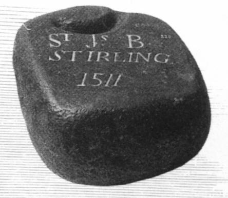
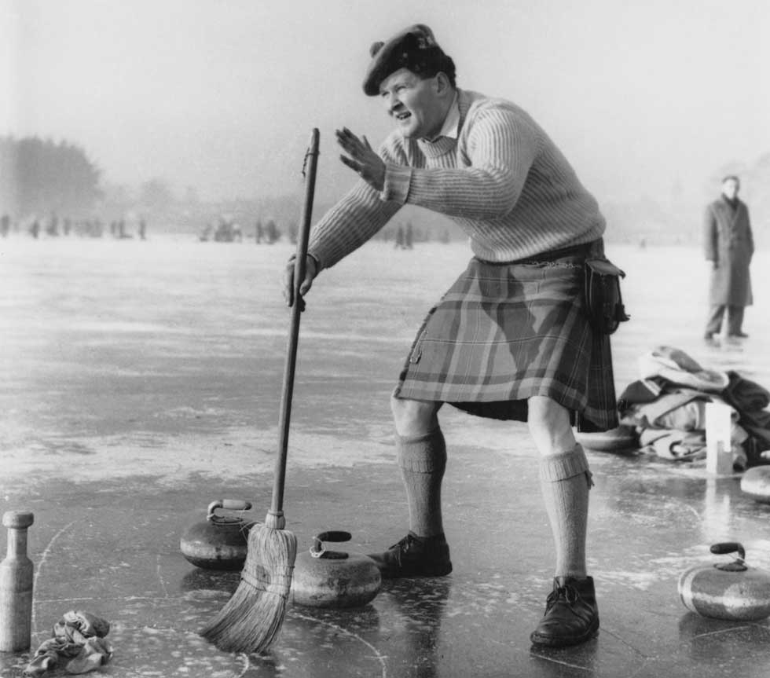

Кёрлинг, имеющий более чем 500-летнюю историю, является одной из древнейших спортивных игр, однако точных данных о времени и месте возникновения игры не существует.
Свидетельства, основанные на произведениях искусства, современной литературы и археологических находках, указывают на Шотландию как родину игры и на начало XVI века как время её появления:
· Камень для игры в кёрлинг с высеченной на нём датой 1511, найденный на дне озера недалеко от Стерлинга, Шотландия;
· Картины Питера Брейгеля старшего и других голландских художников середины XVI века, изображающие игру похожую на кёрлинг;
· Письменное свидетельство – запись на латыни в протоколах аббатства Пейсли, датированная 1540 годом, содержащая отчёт о вызове на состязание по кёрлингу монахом Джоном Склейтером представителя аббатства Гэвина Гамильтона.
Название игры curling произошло от глагола curr (греметь, грохотать) по характерному звуку, издаваемому скользящим камнем по замёрзшему льду. Кёрлинг также называют «игрой в ревущие камни».
Привычное для нас вращение камня при броске стали применять в конце XVIII века. Многие современные игроки считают, что название игры произошло именно от глагола curl (закручивать).
Значительная популярность кёрлинга в Шотландии в XVIII веке стала движущей силой для создания единого набора правил для игроков по всей стране. Огромную роль в этом сыграло создание кёрлинговых сообществ. Старейшим кёрлинг клубом, который действует и по сей день, считается ассоциация игроков в кёрлинг шотландского города Килсит, существующая с 1716 года.
В начале XIX века игра вместе с шотландскими переселенцами распространилась по миру, в основном в страны с холодным климатом – Канаду, США, Швецию, Норвегию, Швейцарию и Новую Зеландию.
Первая ассоциация кёрлинга объединившая множество разрозненных кёрлинг клубов была создана в 1838 году в Эдинбурге. Она получила название «Главный кёрлинг-клуб Каледонии». Создание Главного Каледонского кёрлинг клуба стало одним из самых значительных событий в мире кёрлинга. Работа клуба позволила со временем стандартизировать правила игры, размеры и форму камней, размеры площадки и количество игроков в команде.
В 1843 году, когда покровителем ассоциации стал принц Альберт, она получила право называться «Королевский кёрлинг-клуб Каледонии». С тех пор клуб неизменно находился под покровительством королевской семьи.
Королевский кёрлинг-клуб до 1966 года выполнял функции международного руководящего органа.
Международная федерация кёрлинга была основана 1 апреля 1966 года, на тот момент в её состав входили федерации 7 стран. Федерация была создана в виде международного комитета Королевского клуба. В 1982 году после внесения поправок в устав Федерация стала независимой организацией, а Королевский клуб был признан «материнским клубом кёрлинга».
Если первыми площадками для игры в кёрлинг служили замёрзшие реки и озёра, а в качестве снарядов использовали подходящие по форме камни, то в настоящее время соревнования проводят на закрытых специализированных катках, лёд которых подготовлен специальным образом для создания наилучших условий игрокам. Основным сырьём для производства камней с конца XIX века является гранит с шотландского острова Эйлса Крейг, который отличается высокой плотностью и однородностью.
Не менее важными в кёрлинге были и остаются правила поведения на площадке и за её пределами – «дух кёрлинга». Основные правила, регламентирующие поведение игроков в кёрлинге, были установлены в эпоху королевы Виктории. В эту эпоху правила для всех видов спорта создавались или переделывались с учётом образа рыцарства. Честность являлась абсолютным императивом. Манера проведения игры обладала таким же значением, как и её результат. Ни один настоящий джентльмен не будет обманывать в кёрлинге – настоящий игрок предпочтёт проиграть, чем выиграть нечестно.